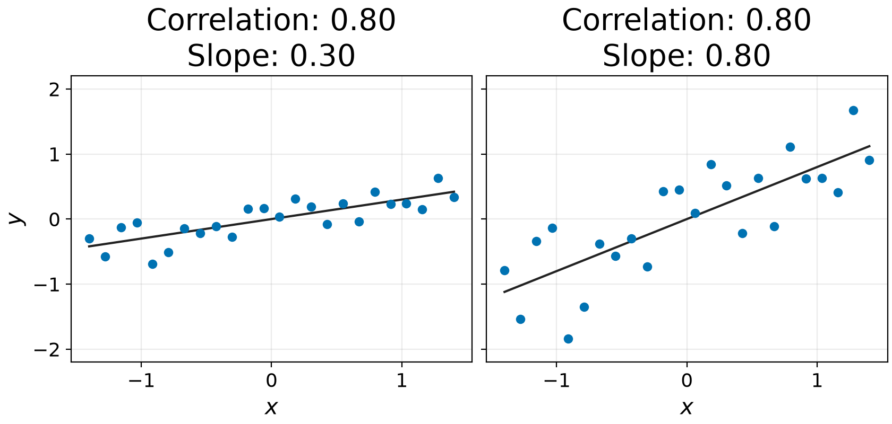
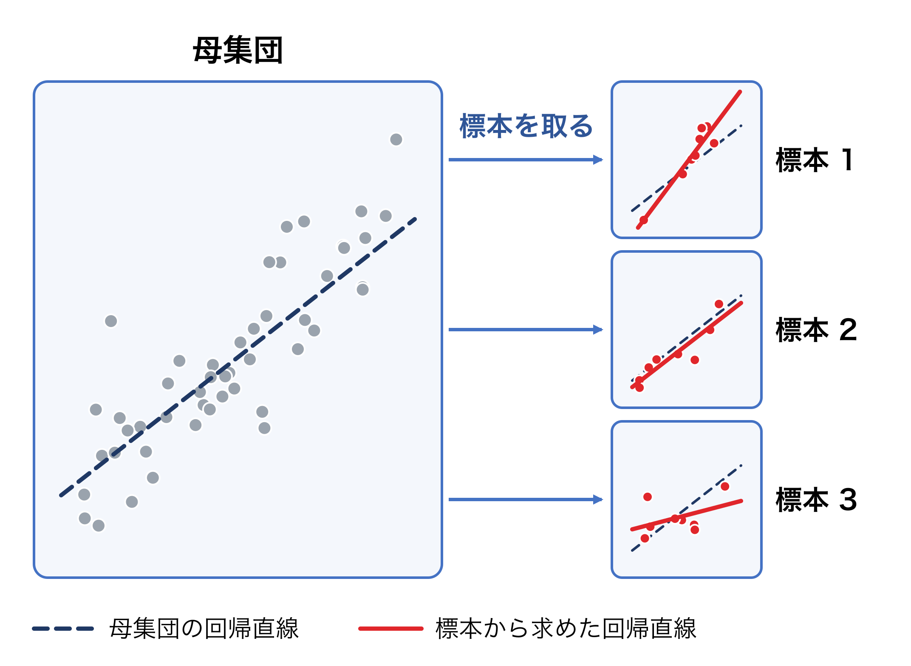
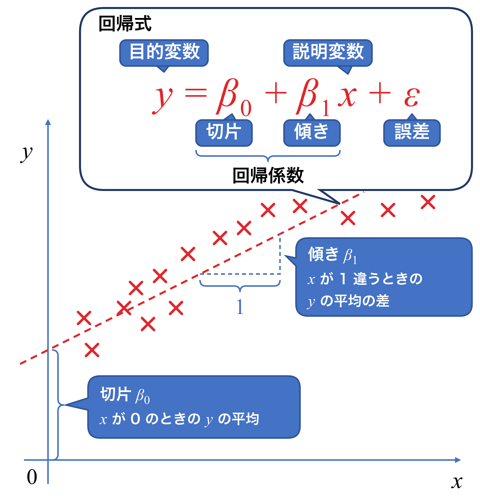
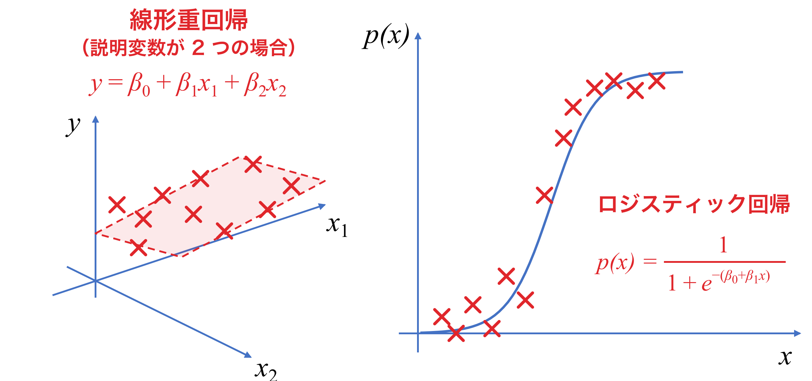
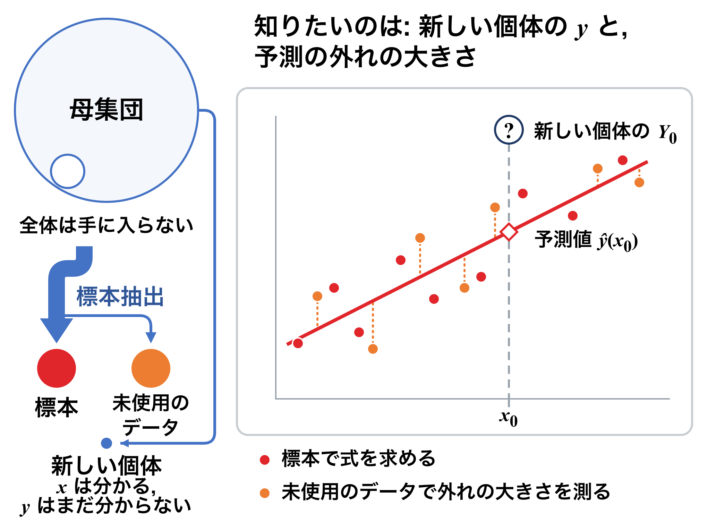
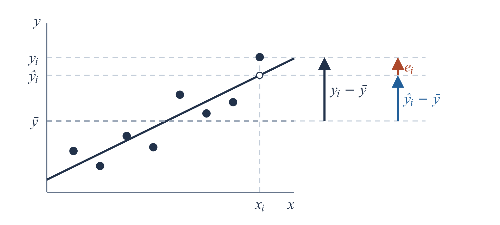
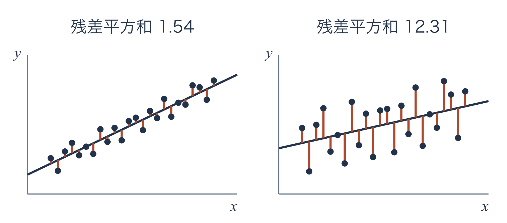

回帰分析とは何か / 単回帰分析
出生率の単回帰と GPA の重回帰を使って, 関係の定量化と母集団への推測を学びます. 新しい学生の GPA の予測誤差を測り, 介入する場合としない場合の平均の差を求めるための条件を考えます.
モデル選択の授業では目的ごとの変数の選び方, すべての変数を入れて P 値で比べることの問題, 情報量規準, ステップワイズ法を扱います. その他の手法の問題と使いどころ, 学問分野ごとの手法の違いと経緯, 選んだ後の推論, さらに学ぶための文献は自習用です.
因果推論の推定手法は, 選択資料の因果推論 (作成中) で扱います.
2 つの量的変数に関係があるかないかは, まず散布図で点の並びを見て判断します. その関係の向きと直線的な強さを数値で表したものがピアソンの相関係数です. 点が右上がりに並ぶと相関係数は正, 右下がりに並ぶと負になり, 直線に近く並ぶほど絶対値が 1 に近づきます.
しかし, 相関係数からは, 一方が 1 違うときに他方が平均でどれだけ違うか (関係の大きさ) は分かりません. 図は, 横軸と縦軸の目盛りをそろえた 2 組の合成データです. 相関係数はどちらも 0.80 ですが, 横軸の値が 1 違うとき, 直線の高さの差は左で 0.30, 右で 0.80 です.

回帰分析では, 例えば横軸の値ごとに, 縦軸の変数の平均を式で表します. 直線で表すと, 傾きから横軸の値が 1 違うときの平均の差が分かります.
この式は, 手元のデータから求めます. 調べたい対象の集団全体を母集団, 母集団から取り出した手元のデータを標本と呼びます. 標本から求めた式は, 同じ母集団から標本を取り直すと, 含まれる観測が変わるため変わります.

図は説明のために作った模式図です. 左は母集団で, 破線は母集団の回帰直線です. 右の 3 つは, 同じ母集団から取った標本と, それぞれの標本から求めた回帰直線 (赤の実線) です. どの標本も同じ母集団から取ったものですが, 直線の傾きと切片は標本ごとに異なります. 母集団について平均の差を述べるには, 標本の取り方を踏まえ, 推定値のこのばらつきも考える必要があります. このばらつきをもとに, 母集団の係数について値の範囲を示すのが信頼区間です. 検定では, 例えば母集団の傾きが 0 だと仮定したときに, 標本で得た傾き以上に 0 から離れた傾きがどれほど起こりやすいかを調べます. ばらつきの測り方は回帰係数の分布・信頼区間・検定にあります.
まず回帰式の形と各部の名前を確かめ, そのうえで回帰分析を何に使うかを整理します.
回帰式と回帰係数
回帰分析では,
y = \beta_0 + \beta_1 x + \varepsilon
のような式で変数 y と x の関係を表し, この式を回帰式, 回帰方程式と呼びます. このとき,
説明される変数 y を 被説明変数, 目的変数などと呼びます.
説明する変数 x を説明変数, 独立変数などと呼びます.
ここでの「独立」は, 確率変数どうしが独立であるという意味ではありません.
\varepsilon は, x の値が同じでも観測ごとに異なる y のずれを表し, 誤差と呼びます. x の値ごとに誤差の平均を 0 とするので, \beta_0 + \beta_1 x は x の値が同じ観測の y の平均を表します. 誤差の性質は母回帰式と誤差で扱います.
回帰式における \beta_0のような変数に乗じられていない値を切片といいます.
切片は, x = 0 のときの y の平均を意味しています.
変数に乗じられている\beta_1のような値を傾きといい, \beta_0,\beta_1 などを併せて回帰係数といいます.
傾きは, x が 1 違うときの y の平均の差を表しています.

説明変数が一つの回帰式を求める分析を単回帰分析, 2 つ以上の説明変数を用いる場合を重回帰分析といいます.
y が x の線形関数である場合を 線形回帰 (Linear regression), それ以外のものを非線形回帰 (non-linear regression)といいます.
次の図の右のロジスティック回帰は非線形回帰の例で, 目的変数が 0 か 1 の値をとるときに使います. 例えば単位を取得した学生を 1, 取得しなかった学生を 0 とすると, 勉強時間が同じ学生どうしの 0 と 1 の平均は, 単位を取得した学生の割合です. 10 人のうち 7 人が取得したなら, 平均は 7/10 = 0.7 です. 母集団では, この平均が単位を取得する確率にあたります. ロジスティック回帰は, 説明変数の線形式を 0 と 1 の間の確率に変換して, この確率を表します. 目的変数の取りうる値に応じて分布と平均の表し方を選ぶモデルを一般化線形モデルと呼び, ロジスティック回帰はその一つです. 変換の式と確率の求め方は一般化線形モデルにあります.

回帰分析の目的
回帰式と回帰係数で名前を確かめた回帰式は, どのような問いに答えるために使うのでしょうか. Gelman et al. (2020, Section 1.2) は, 回帰の主な用途として次の 4 つを挙げています.
- 予測: 既にある観測を式で表し, 新しいデータの値を当てること. 例として, 選挙の得票率や病気の診断が挙げられています.
- 関連を調べること: ある変数や変数の組から, 目的変数をどれだけ予測できるかを要約すること. 例として, 病気の危険因子を特定することが挙げられています.
- 外挿: 標本と関心のある母集団との既知の違いを調整して, 母集団について述べること. 例として, 回答者が母集団を代表していない世論調査の調整が挙げられています.
- 因果推論: 処置を受けた場合と受けなかった場合の結果を比べ, 処置の効果を推定すること.
本稿では, 回帰分析の結果が誰について何を述べるかで, 目的を関係の定量化と母集団への推測, 予測, 因果推論の 3 つに分けます. この分け方は, 上の 4 つの用途をもとに本稿で組んだものです. 関連を調べる用途に, 標本から母集団について述べる推測を合わせたものを, 関係の定量化と母集団への推測と呼びます. 外挿は, どの目的でも結果を別の集団へ広げるときに要る手順として, 目的ごとの説明の後で扱います.
3 つの目的の違いを, 一組の記録で確かめます. ある大学の学生について, GPA, 週あたりの勉強時間とアルバイト時間, 奨学生かどうかを記録したとします. この例では, 推測や予測の対象とする学生の集団が母集団です. これは架空の例で, 実際の分析には合成 GPA の学習用データを使います. この記録から, 目的ごとに異なる問いを立てられます. 次の表では, 問いを目的ごとに並べ, それぞれの前提と確かめ方を比べます.
| 問い | 誰について何を述べるか | 何を前提にするか | 何で確かめるか |
|---|---|---|---|
| (a) 関係の定量化と母集団への推測. 他の条件が同じで, 勉強時間だけ週 1 時間違う学生を比べると, 平均 GPA はどれだけ違うか | 標本を取った母集団での, 条件をそろえた平均の差 | 母集団からの抽出に偏りがなく, 比べる条件を先に決めていること. 比較する条件の範囲で, 回帰式が平均の差を表せること | 係数と信頼区間を示し, 必要なら検定する. 同じ母集団の別の標本でも差を調べる |
| (b) 予測. 次に入学する学生の GPA をどれだけ正確に当てられるか | 同じ母集団の新しい学生 1 人ずつの GPA と, 予測の誤差 | 新しい学生が標本と同じ分布から来て, 予測に使う変数を予測時に得られること | 回帰式を決めるときに使わなかったデータで, 予測値と実際の値の差を測る |
| (c) 因果推論. 勉強時間を増やす介入を行うと, 平均 GPA はどう変わるか | 同じ母集団で, 介入する場合としない場合の平均 GPA の差 | 介入内容を定め, 観測した結果と介入した場合の結果を結び付ける因果の構造を仮定すること. 無作為な割り付けで比較できる場合もある | 観測データから目的の差を求められる条件を調べ, 仮定を変えた場合や, 別の設計で得た結果を検討する |
目的によって, 何を前提にし, どの変数を回帰式に入れ, 結果をどう確かめるかが変わります. Shmueli (2010) は, 理論から導いた因果の仮説を統計モデルで検証することを「説明」, 新しい観測の値を当てることを「予測」と呼んで区別し, 研究の設計とデータの収集, 変数の選び方, 手法の選び方, モデルの評価と検証など, モデルを作るどの段階でも, 2 つの目的で扱いが変わることを示しています. 同じ論文は, 回帰式を因果推論や予測のためでなく, 変数どうしの関連を捉えるために当てはめる場合を「記述」と呼んでいます. 表の (a) で求めるのは, 観測した条件をそろえた学生どうしの平均の差で, この「記述」にあたります. 例えば, 奨学生区分とアルバイト時間を式に入れると, 両方の条件が同じ学生どうしで, 勉強時間が異なるときの平均 GPA の差を求められます. 標本から母集団での平均の差を推定するときは, 標本の選び方が根拠になります.
母集団の回帰式の係数 \beta_0, \beta_1 のように, 母集団を特徴付ける値を母数と呼びます. 標本から求めた回帰式は, 母集団の回帰式と区別して \hat y = \hat\beta_0 + \hat\beta_1 x と書き, その係数 \hat\beta_0, \hat\beta_1 を母数の推定値と呼びます. 次の図は, この目的での母集団と標本の関係を, 説明のために描いた模式図です. 点は実データではありません. 母集団全体は手に入らないので, 母数は分かりません. 手に入る標本からは推定値を計算でき, 信頼区間や検定を使って, 推定値から母数について述べます. この手順が, 関係の定量化と母集団への推測の「推測」にあたります.

頻度論とベイズ統計学
表の (a) のように母集団について述べるとき, この分野では頻度論の枠組みを使います. 頻度論では母数を固定した値とみなし, 同じ手順で標本を取り直したときのばらつき (標本ごとに回帰直線が異なる図で見たもの) から, 信頼区間と検定を作ります.
ベイズ統計学では, 母数の不確かさを確率分布で表します. データを観測する前の不確かさを表す事前分布と, データの出方を表すモデルを組み合わせ, 観測後の事後分布を求めます. 事後分布は, 例えば GPA の傾きがどの範囲にあるかを述べるのに使えます.
2 つの枠組みの違いは, 不確かさをどう表すかにあります. どちらの枠組みでも, 関係の定量化, 予測, 因果推論の問いを扱えます. ベイズの考え方と実例は統計モデリングとベイズ統計学の基礎にあります.
新しく入学した学生の GPA を予測するときは, 例えば同じ勉強時間の学生の平均 GPA を予測値として使えます. 予測の誤差には, 手元の標本から平均を推定するときの誤差と, 勉強時間が同じでも残る個人差が含まれます. 新しい学生の成績が予測値からどれだけ外れるかは, 回帰式を決めるときに使わなかったデータで測ります.
次の図は, 予測での母集団と標本の関係を, 推測の図と同じ形で描いた模式図です. 点は実データではありません. 母集団から, 回帰式を求める標本とは別に, 回帰式を決めるときに使わないデータ (図の未使用のデータ) を取り分けます. 新しい個体 (新しく入学した学生) については, 説明変数の値 x_0 は分かっていても, 目的変数の値 Y_0 はまだ分かりません. 標本から求めた回帰式による x_0 での予測値を \hat y(x_0) と書くと, 知りたいのは Y_0 と, \hat y(x_0) が Y_0 からどれだけ外れるかです.

誤差を測る手順と, 平均についての区間と個人についての予測区間の読み方は予測にあります.
勉強時間を増やす取り組みの効果を知りたい場合は, 同じ学生集団が取り組みを受けた場合と受けなかった場合の平均 GPA を比べます. 観測データで勉強時間の異なる学生を比べると, 勉強時間以外の条件も異なることがあります. 観測データから介入した場合としなかった場合の平均の差を求められるかは, 勉強時間と GPA がどう決まるかについての仮定や, データを集めた設計によって変わります. Hernán et al. (2019) は, データサイエンスの課題を, データの特徴を要約する記述, 入力から出力を当てる予測, 世界が違っていた場合の結果を当てる反事実の予測の 3 つに分け, 因果推論を反事実の予測に含めています. そして, 予測と因果推論の違いを専門知識の役割に求めています. 予測では, 何を当てるかと使う変数の候補を決めて測れば, あとはデータから入力と出力の対応を求められます. 因果推論では, 結果がどのように生じるかという因果の構造についての知識が, 多くの場合は確かめられない仮定として要ります.
勉強時間を増やす取り組みのように, 効果を知りたい働きかけを処置と呼びます. 同じ母集団の全員が処置を受けた場合の平均と, 全員が受けなかった場合の平均の差を平均処置効果と呼び, これが因果推論の目的です. 次の図は, この目的での母集団と標本の関係を描いた模式図です. 点は実データではありません. どちらの場合についても, 母集団全体の結果は観測できません. 標本の各個体についても, 観測できるのは処置を受けた場合か受けなかった場合の一方の結果だけです. 標本で計算できるのは, 処置を受けた個体の集まり (処置群) と受けなかった個体の集まり (対照群) の平均の差です. この差を平均処置効果に結び付けるのが, 処置の無作為な割り付けか, 因果の構造についての仮定です.

いずれの目的でも, 別の年度や別の大学の学生まで対象を広げるときは, 学習環境や GPA の付け方が元の学生集団とどの程度共通するかを調べます. 平均の差の推測, 新しい学生の予測, 介入の効果のいずれについても, 元の集団で求めた結果を広げた先の集団に当てはめるには, 追加の前提が要ります. これは, 節の初めに挙げた 4 つの用途のうちの外挿にあたります. Gelman et al. (2020, Section 1.2) は外挿の例として, 自ら参加を申し出た学校の標本から, 州のすべての学校について結論を出す場合も挙げています.
表に挙げたどの目的でも, 問いを立てる前にデータを見て, 調べる関係を決めることがあります. この作業を探索と呼びます. 例えば運動時間も記録していれば, 勉強時間, アルバイト時間, 運動時間をそれぞれ GPA と組み合わせた散布図を描き, どの関係を詳しく調べるかを考えます. Leek & Peng (2015) はデータ分析を, 記述, 探索, 推測, 予測, 因果, 機構の 6 種類に分けています. そのうち探索は, 測った値どうしの傾向や関係を探して仮説を生む分析で, 見つけたことを探索だけで確かめられることはまれだとしています. 探索で見つけた関係は仮説として扱い, 別のデータを集めて確かめます. データを見て回帰式に入れる変数を選ぶ方法はモデル選択にあります.
Leek & Peng (2015) は, データ分析で最も多い誤りは, 分析している問いの種類を取り違えることだとしています. 挙げられている取り違えを表の言葉で言うと, 次のようになります.
- で求めた係数を, (c) の介入した場合の差として読む. Leek と Peng はこの誤りを「相関は因果を意味しない」という言い回しで示しています.
- 探索で見つけた関係を, (a) の母集団での差として報告する. この誤りは data dredging と呼ばれています.
- 探索で選んだ式の当てはまりを, (b) の新しい学生への予測の誤差とみなす. この誤りは過学習 (overfitting) と呼ばれています.
回帰をどの目的に使い, 分析のどの点を重視するかは, 分野によって異なります. Shmueli (2010) によると, 経済学, 心理学, 教育学, 環境科学などでは統計モデルがほとんど因果の説明のためだけに使われ, 自然言語処理や生物情報学では予測が重視されています. 分野ごとにどのような問題が調べられ, どのような方法が使われてきたかは, 学問分野ごとの手法の違いと経緯にあります.
本稿では, これらの目的のうち, まず関係の定量化と母集団への推測を扱います. 単回帰分析で, OECD の出生率のデータを使い, 関係の大きさを傾きで表します. 重回帰分析では, 条件をそろえたときの平均の差を考え, 合成 GPA のデータで実際に回帰係数を求めます. 次に, 予測と因果推論でそれぞれ注意する点を順に確かめます. 予測では未使用のデータで予測の誤差を測り, 因果推論では介入した場合の平均の差を求めるための条件を考えます. 最後に, データを見て回帰式に入れる変数を選ぶ場合に, 選んだ式で何を確かめられるかを考えます.
演習
Exercise REG-INTRO-1
GPA についての 3 つの問い
次の問いを, 関係の定量化と母集団への推測, 予測, 因果推論のいずれかに分類してください. それぞれ, 誰について述べるかと, 結果を得るために必要な前提を 1 つずつ挙げてください.
- 今年度の学生で, 奨学生区分とアルバイト時間が同じ場合に, 勉強時間が週 1 時間長い学生の平均 GPA はどれだけ高いか.
- 来年度, 入学後 1 か月の勉強時間の記録を使うと, 新入生の学期末 GPA をどれだけ正確に当てられるか.
- 学期中に自習時間を週 1 時間設けると, 同じ学生集団の学期末の平均 GPA はどう変わるか.
回答
- 関係の定量化と母集団への推測です. 対象は今年度の学生の母集団です. 母集団から偏りなく標本を取ることが前提です.
- 予測です. 対象は次に入学する学生一人ひとりです. 例えば, 回帰式を作った標本と来年度の新入生の分布が同じという前提を置きます. 来年度と同様の条件をもつ未使用の学生データで誤差を測ります.
- 因果推論です. 対象は自習時間を設ける場合と設けない場合の, 同じ学生集団の平均の差です. 例えば, 自習時間を設けるかどうかを無作為に割り付けて, 群の比較ができるようにします.
Exercise REG-INTRO-2
データを見てから見つけた関係
担当者は, 勉強時間・運動時間・アルバイト時間と GPA の散布図を作り, 関係が目立った運動時間について詳しく調べることにしました. この時点の作業を分類してください. 同じ大学の母集団でも関係が成り立つかを確かめるには, 次にどのような標本を使いますか.
回答
関係を探しながら変数を選んでいるので探索です. 運動時間と GPA に関係があるという仮説を立て, 同じ大学の対象学生から新しく偏りなく取った標本で確かめます. 新しい標本を見る前に, どの条件をそろえ, どの回帰係数を調べるかを決めます.
参考文献
単回帰分析
回帰分析の目的で述べたとおり, 本稿ではまず関係の定量化と母集団への推測を扱います. 説明変数が 1 つの単回帰分析を, 実際のデータで行ってみます. 事例として, 男性の家事・育児時間と出生率の関係を示した報道の図を取り上げ, その分析にどのような問題があるかを考えます.
男性の家事・育児時間の割合が 1 パーセントポイント高い国では, 合計特殊出生率は平均でどれだけ違うでしょうか. 国ごとの値を散布図にし, 単回帰直線の傾きでこの関係を表します.
出生率と時間配分の表の結合
日本経済新聞は, 家事・育児時間の男女差と少子化の関係を報じました. 記事の図は 16 か国を対象に, 国ごとに家事・育児時間の男女差を棒で, 合計特殊出生率を点で示しています.

出典 日本経済新聞, 男性の育児・家事時間と出生率についての記事
図に載った 16 か国はどのように選ばれたのでしょうか. 別の国を加えると, 2 つの指標の関係はどう見えるでしょうか. 図の横軸には国名が並ぶので, 各国の値を読み取れます. 2 つの量の関係を見るには, 片方の量を横軸に, もう片方を縦軸に置きます.
内閣府の図は, 横軸を男性の家事・育児等労働時間割合とし, 合計特殊出生率との関係を散布図と回帰直線で示しています. 直線の傾きは, 図に含まれる国どうしで, 男性の家事・育児等労働時間割合が違うときの出生率の平均的な差を表します.

出典 内閣府 政策統括官（経済社会システム担当）第４回会議資料「選択する未来2.0」資料２ 参考資料②(事務局資料)
内閣府の図には回帰式 y=0.0132x+1.2027 と決定係数 R^2=0.2966 が記載されています. 対象は 18 か国で, トルコは含まれません. 国名に添えた年は国によって異なります.
対象国を変えても同じ関係が見えるかを調べるため, 元の表に戻ります.
OECD Family Database から SF2.1 (Fertility rates) と LMF2.5 (Time used for work, care and daily household chores) の Excel ファイルをダウンロードし, それぞれから下の配布表を作りました.
どちらの表でも Country は国名です. SF2.1 の合計特殊出生率 (Fertility) は, 女性 1 人あたりの子どもの数です.
LMF2.5 の時間配分からは, 男性の有償労働 (Paid), 無償の家事 (Unpaid), 育児などのケア (Care) に使う時間を取り出しました.
配布表は, 2019 年の出生率と, 国によって 1999 年から 2013 年の調査に基づく時間配分を収めています. 日本経済新聞の図は 2019 年のデータと注記しています. 配布表で求めた傾きと決定係数を内閣府の図と比べるときも, それぞれが対象とした国と調査年を確かめます.
内閣府のグラフに合わせて, 男性が 3 項目に使う時間の合計を分母とし, 家事・育児に使う割合を百分率で表します. 計算式は 100 \times (\mathrm{Unpaid}+\mathrm{Care})/(\mathrm{Paid}+\mathrm{Unpaid}+\mathrm{Care}) です. この割合を x とし, 同じ国の出生率と組み合わせます.
fertility_rates.csv と
time_used.csv をダウンロードし, コードと同じフォルダに置いてください.
コードはそのフォルダから実行してください.
必要な Python パッケージは pandas, numpy, matplotlib, statsmodels, adjustText です.
import matplotlib.pyplot as plt
import numpy as np
import pandas as pd
import statsmodels.api as sm
from adjustText import adjust_text
fertility = pd.read_csv("fertility_rates.csv")
time_use = pd.read_csv("time_used.csv")
print(fertility.head(2).to_string(index=False))
print(time_use.head(2).to_string(index=False))Country Fertility
Korea 0.92
Spain 1.23
Country Paid Unpaid Care
Australia 20.3 10.5 2.2
Austria 22.5 9.4 1.5配布表を読み込んだら, 男性の家事・育児時間の割合を計算し, r に格納します.
unpaid_and_care = time_use["Unpaid"] + time_use["Care"]
total_work = time_use["Paid"] + unpaid_and_care
time_use["r"] = 100 * unpaid_and_care / total_work出生率と家事・育児時間の割合が両方そろうのはどの国でしょうか. 結合した表で確かめます.
出生率の表ではトルコが Türkiye, 時間配分の表では Turkey と表記されています.
出生率の表の表記を Turkey にそろえてから, Country をキーに結合します.
validate="one_to_one" を指定すると, 同じキーが片方の表に複数回現れたときにエラーになります.
外部結合 (how="outer") では, 片方の表にしかない行も残ります.
indicator=True で追加した _merge 列で, それぞれの行がどちらの表にあったかを確かめます.
fertility["Country"] = fertility["Country"].replace({"Türkiye": "Turkey"})
joined = fertility.merge(
time_use[["Country", "r"]],
on="Country",
how="outer",
validate="one_to_one",
indicator=True,
)
unmatched = joined.loc[joined["_merge"] != "both", ["Country", "_merge"]]
print(unmatched.to_string(index=False)) Country _merge
Chile left_only
Colombia left_only
Costa Rica left_only
Czech Republic left_only
Denmark left_only
Greece left_only
Hungary left_only
Iceland left_only
Ireland left_only
Israel left_only
Lithuania left_only
Luxembourg left_only
Netherlands left_only
OECD average left_only
Portugal left_only
Slovak Republic left_only
Switzerland left_onlyleft_only の行には出生率だけがあります.
今回の表には, 時間配分の表にだけある right_only の行はありません.
both の行を残し, dropna() で数値が欠けている行を除きます.
両方の値がそろったのは 22 か国です.
内閣府の図にメキシコが含まれないので, メキシコを外した 21 か国に直線を当てはめます.
結合後の 21 か国にはトルコが入ります. 内閣府の図に載るオランダとデンマークは, 2 つの表を結合すると left_only になります.
メキシコを加えた場合は Exercise REG-SIMPLE-1 で確かめます.
matched = joined.loc[joined["_merge"] == "both", ["Country", "Fertility", "r"]]
countries = matched.set_index("Country").dropna()
analysis = countries.drop(index="Mexico")
print(f"Matched: {len(countries)}, used in the main example: {len(analysis)}")
print(analysis.head(2).to_string(float_format="{:.2f}".format))Matched: 22, used in the main example: 21
Fertility r
Country
Australia 1.67 38.48
Austria 1.46 32.63家事・育児時間の割合と出生率の散布図
両方の値がそろった国のうち, メキシコを外した 21 か国について散布図を描きます. 横軸は男性の家事・育児時間の割合 (%), 縦軸は 2019 年の合計特殊出生率です.
def plot_countries(data):
fig, ax = plt.subplots(figsize=(10, 6), layout="constrained")
points = ax.scatter(data["r"], data["Fertility"], color="#23658b", zorder=3)
ax.set(
xlim=(8, 49),
ylim=(0.82, 1.98),
xlabel="Men's unpaid work and care (% of work time)",
ylabel="Total fertility rate (children per woman)",
)
ax.grid(alpha=0.25)
labels = [
ax.text(row.r, row.Fertility, country, fontsize=9)
for country, row in data.iterrows()
]
return fig, ax, points, labels
fig, ax, points, labels = plot_countries(analysis)
adjust_text(
labels,
objects=points,
ax=ax,
iter_lim=300,
min_arrow_len=4,
arrowprops={"arrowstyle": "-", "color": "0.45", "linewidth": 0.6},
)
plt.show()
plt.close(fig)
1 点は 1 か国です. 日本と韓国はどちらの値も低く, 図の左下にあります.
トルコの家事・育児時間の割合は約 23% と低く, 合計特殊出生率は 1.88 で 21 か国の中で最も高い値です. トルコの点は, 割合が高い国ほど出生率が高いという傾向から外れています.
右側では同程度の割合でも出生率にばらつきがあります. 日本経済新聞の図の棒は時間の男女差を示し, この散布図の横軸は男性の時間配分の割合です. 横軸の値が近い国を探し, 縦軸の出生率にどの程度の差があるかを点の位置から読み取ってください.
単回帰の係数と国の組み合わせ
sm.OLS の OLS は Ordinary Least Squares (最小二乗法) の略です. sm.OLS に目的変数と説明変数の表を渡します.
sm.add_constant は切片を求めるために, 全行が 1 の列 const を追加します.
print(sm.add_constant(analysis[["r"]]).head(2).to_string(float_format="{:.2f}".format)) const r
Country
Australia 1.00 38.48
Austria 1.00 32.63fit() で係数を求め, summary().tables[1] で係数の表を取り出します.
def fit_fertility(data):
predictors = sm.add_constant(data[["r"]])
return sm.OLS(data["Fertility"], predictors).fit()
result = fit_fertility(analysis)
print(result.summary().tables[1])==============================================================================
coef std err t P>|t| [0.025 0.975]
------------------------------------------------------------------------------
const 1.2082 0.197 6.119 0.000 0.795 1.621
r 0.0093 0.006 1.687 0.108 -0.002 0.021
==============================================================================| 列 | 読み方 |
|---|---|
coef |
係数の推定値です. const は切片, r は傾きです. |
std err |
係数の推定値の標準誤差です. |
t |
係数の推定値を標準誤差で割った t 統計量です. |
P>|t| |
係数が 0 という帰無仮説に対する両側 P 値です. |
[0.025 と 0.975] |
95% 信頼区間の下限と上限です. |
標準誤差は, 同じ手順で標本を取り直したときに, 係数の推定値がどれだけばらつくかの目安です. 係数や標準誤差の求め方は, 詳しくは回帰分析は何を行っているのかにあります.
同じ標準誤差と t 分布で求めると, 有意水準 5% では P 値が 0.05 未満のときに 95% 信頼区間は 0 を含みません. 出力の P 値は両側の裾の確率を足した値なので, 有意水準 5% での比較には 0.05 を使います.
切片の P 値は小数点以下 3 桁への丸めで 0.000 と表示されます.
傾きの 95% 信頼区間は 0 を含みます. 検定の前提が成り立つ場合, これは 5% 水準の両側検定で傾きが 0 という仮説を棄却しないことに対応します.
出力の P 値と区間は, 母集団から標本を無作為に取るなど, 標本のばらつきを確率で表せる前提のもとで解釈します.
この例の 21 か国はある母集団から偶然に取り出した標本ではないため, 表の P 値を母集団への推測には使いません.
母集団への推測は, 同じ仕組みから別の標本を作れる 合成 GPA の例 で扱います.
21 か国に当てはめた式では, 男性の家事・育児時間の割合を x として, 出生率の当てはめ値は \hat y = 1.2082 + 0.0093x です. 直線では, 男性の家事・育児時間の割合が 1 パーセントポイント高い国ほど, 合計特殊出生率が平均で約 0.00931 高いと読みます.
日本経済新聞の図で挙がった対象国の選び方を検討するため, 国を入れ替えると傾きがどう変わるかを調べます. 表記をそろえずに結合するとトルコが落ちます. その場合に相当する 20 か国, 本文の 21 か国, メキシコも含めた 22 か国で, 単回帰を当て直します.
comparisons = {
"Without Turkey or Mexico": analysis.drop(index="Turkey"),
"Main example": analysis,
"Including Mexico": countries,
}
for label, data in comparisons.items():
slope = fit_fertility(data).params["r"]
print(f"{label:25s} {len(data):2d} {slope:.5f}")当てはめた傾きの単位は, 家事・育児時間の割合 1 パーセントポイントあたりの合計特殊出生率の差です.
| 対象 | 国数 | 傾き |
|---|---|---|
| トルコとメキシコを除く | 20 | 0.01344 |
| この節の分析 (トルコを含み, メキシコを除く) | 21 | 0.00931 |
| トルコとメキシコを含む | 22 | 0.00517 |
トルコもメキシコも, 家事・育児時間の割合が約 20〜23% で, 合計特殊出生率が 1.88 以上です. この 2 国を順に加えると, 当てはめた傾きは小さくなります.
回帰直線と出生率の当てはまり
内閣府の図と同じように, 21 か国の散布図に回帰直線を重ねます.
家事・育児時間の割合の最小値から最大値までを np.linspace で 100 点に区切ります.
各点に対する出生率の当てはめ値を計算し, 散布図に直線を重ねます.
work_share = np.linspace(analysis["r"].min(), analysis["r"].max(), 100)
fitted_line = result.params["const"] + result.params["r"] * work_share
fig, ax, points, labels = plot_countries(analysis)
ax.plot(work_share, fitted_line, color="#b44532", label="OLS line")
ax.legend(loc="lower right")
adjust_text(
labels,
objects=points,
ax=ax,
iter_lim=300,
min_arrow_len=4,
arrowprops={"arrowstyle": "-", "color": "0.45", "linewidth": 0.6},
)
plt.show()
plt.close(fig)
直線の傾きは正です. トルコの点は直線より上にあり, トルコの実測の出生率は, その家事・育児時間の割合に対応する当てはめ値より高くなっています.
内閣府の図 と回帰直線を比べるときは, 2 つの直線の算出に使った国と調査年を確かめてください.
国ごとの当てはめ値 (result.fittedvalues) を横軸に, 実測値を縦軸に置くと, ずれを同じ破線から読み取れるので, 国どうしで比べやすくなります.
破線は実測値と当てはめ値が一致する場所です.
observed = analysis["Fertility"]
fitted = result.fittedvalues
limits = (0.85, 1.95)
fig, ax = plt.subplots(figsize=(6, 6), layout="constrained")
ax.scatter(fitted, observed, color="#23658b", alpha=0.8)
ax.plot(limits, limits, color="#b44532", linestyle="--", label="Exact fit")
ax.set(
xlim=limits,
ylim=limits,
xlabel="Fitted total fertility rate",
ylabel="Observed total fertility rate",
aspect="equal",
)
ax.legend()
ax.grid(alpha=0.25)
plt.show()
plt.close(fig)
破線より上の点では式が実測値を低く見積もり, 下の点では高く見積もっています. この図で比べているのは, 式を求めるのに使った国の当てはめ値と実測値です. このずれが全体としてどれだけ小さいかは, 次の当てはまりの指標と F 検定で 1 つの値に要約します.
当てはまりの指標と F 検定
回帰直線と出生率の当てはまりの図では, 21 か国の実測値と当てはめ値のずれを国ごとに見ました. 回帰式全体の出力では, このずれを要約する決定係数と調整済み決定係数, F 統計量とその P 値を取り出せます. まず 3 つの値の定義を確かめ, そのあと 21 か国の値を出力して読みます.
決定係数
第 i 番目の観測を (x_i,y_i) とし, y_i の標本平均を \bar y, 回帰式の当てはめ値を \hat y_i, 残差を e_i=y_i-\hat y_i と書きます. 切片を含む最小二乗回帰では, 標本における目的変数の散らばりを, 次の二乗和で表せます.
- 全変動は \sum_i(y_i-\bar y)^2 です. 目的変数が標本の平均からどれだけ散らばっているかを表します.
- 回帰変動は \sum_i(\hat y_i-\bar y)^2 です. 回帰式が観測ごとに与える当てはめ値の散らばりを表します.
- 残差変動は \sum_i(y_i-\hat y_i)^2 です. 回帰式を当てはめた後に残る散らばりを表します.
次の 2 つの模式図では, 8 組の観測 (x_i,y_i) を使って, それぞれの二乗和に入る縦方向の差を示します.

図では, 観測点と平均線の差が y_i-\bar y, 回帰直線と平均線の差が \hat y_i-\bar y, 観測点と回帰直線の差が e_i です.
観測値の平均からの差は, y_i-\bar y=(\hat y_i-\bar y)+e_i です. 二乗して足すと, 交差項の和には \sum_i(\hat y_i-\bar y)e_i が現れます. 切片を含む最小二乗回帰の正規方程式は, 残差の和 \sum_i e_i と, x_i を掛けた残差の和 \sum_i x_i e_i がともに 0 になることを表します. \hat y_i-\bar y は x_i の一次式なので, この二つの和が 0 なら交差項の和も 0 です. したがって, 全変動は回帰変動と残差変動の和になります.

図では, 平均線から当てはめ値までの差と, 当てはめ値から実測値までの差が同じ向きの観測と, 反対向きの観測があります. 二乗和の分解は, 標本全体で交差項を足したときに成り立ちます.
全変動が正のとき, 回帰変動が全変動に占める割合を決定係数 R^2 と呼びます.
R^2=\frac{\sum_i(\hat y_i-\bar y)^2}{\sum_i(y_i-\bar y)^2} =1-\frac{\sum_i e_i^2}{\sum_i(y_i-\bar y)^2}.
標本に回帰式がよく当てはまるほど残差変動は小さく, R^2 は 1 に近づきます.
次の 2 つの図も模式図で, 全変動が同じになるように作った 2 組の合成データを比べています.

二つの標本の全変動を同じにして比べると, 点が直線の近くに集まる左の方が決定係数は大きくなります.

同じ散布図に残差を描くと, 右の方が長い縦線が多く, 残差の二乗和も大きくなります.
自由度調整済み決定係数
同じ標本で説明変数を追加すると, 追加した変数の係数を 0 として元と同じ式を選ぶこともできます. そのため, 最小二乗法で求めた残差変動は増えず, R^2 は下がりません. 自由度調整済み決定係数では, 残差変動と全変動をそれぞれの自由度で割ってから比を取ります.
R^2_{\mathrm{adj}} =1-\frac{\sum_i e_i^2/(n-k-1)}{\sum_i(y_i-\bar y)^2/(n-1)}.
n は標本の大きさ (この節の例では 21), k は説明変数の数で, 切片は含めません (単回帰では 1).
変数を追加したとき, 残差変動の減少が自由度の減少に見合わなければ, R^2_{\mathrm{adj}} は下がります. 値が負になる場合もあります. どちらの決定係数も, 回帰式を当てはめた標本についての指標です. 式を求めるのに使っていない国や年についての誤差は, 予測と予測誤差のように未使用のデータで測ります.
F 検定
切片だけの式と比べると, 説明変数を加えた式の残差変動はどの程度小さくなるでしょうか. F 検定の帰無仮説は, すべての傾きが 0 であること (H_0:\beta_1=\cdots=\beta_k=0) です. 対立仮説は, 少なくとも 1 つの傾きが 0 以外であることです. 切片だけの式の当てはめ値は \bar y なので, 残差変動の減少分は回帰変動になります. 回帰変動と残差変動を自由度で割った値の比が F 統計量です.
F=\frac{\sum_i(\hat y_i-\bar y)^2/k}{\sum_i e_i^2/(n-k-1)}.
k 個の説明変数の係数が一意に定まり, 母集団の条件つき平均が切片と各説明変数の一次式で表されること (母回帰式) と, 独立・等分散の正規誤差を仮定すると, 帰無仮説のもとで F は自由度 (k,n-k-1) の F 分布に従います. F 検定の P 値は, その分布で観測した F 以上となる確率です. この確率が小さければ, 観測した F は帰無仮説のもとで起こりにくい値です. 個々の係数については, 信頼区間に 0 が含まれるか, または係数が 0 という仮説に対する P 値を調べます. 詳しくは傾きが 0 かを調べるにあります.
21 か国の値を読む
21 か国に当てはめた回帰式について, 決定係数, 調整済み決定係数, F 統計量とその P 値を取り出します.
print(f"R-squared: {result.rsquared:.3f}")
print(f"Adj. R-squared: {result.rsquared_adj:.3f}")
print(f"F-statistic: {result.fvalue:.3f}")
print(f"Prob (F-statistic): {result.f_pvalue:.3f}")R-squared: 0.130
Adj. R-squared: 0.084
F-statistic: 2.845
Prob (F-statistic): 0.108決定係数は 0.130 で, 手元の 21 か国の出生率のばらつきのうち, 当てはめた直線で表せた割合を示します. 内閣府の図の決定係数 0.2966 とは値が異なります. 傾きと同じく, 比べるときは 2 つの式の算出に使った国と調査年を確かめます. 調整済み決定係数 0.084 も同じ 21 か国への当てはまりの指標で, 説明変数の数を考慮した値です. 切片を含む単回帰では, F 統計量が傾きの t 統計量の二乗 (F=t^2) になるため, F 検定と傾きの両側検定の P 値はともに 0.108 です. ただし, 単回帰の係数と国の組み合わせで述べたとおり, 21 か国は母集団から無作為に取り出した標本ではないので, この P 値も母集団への推測には使いません.
自由度調整済み決定係数が低いことは, 国の間の出生率の違いのうち, この回帰式で表せる部分が小さいことを示します. 決定係数の値にかかわらず, 国の間の関連からは, 日本で男性の家事・育児時間を増やしたときに出生率がどう変わるかは分かりません.
介入の効果を問う方法は因果推論とは何かで扱います. 出生率の例で, 日本での介入の効果を求めるのに何が要るかは国の間の出生率の比較と国内での介入で述べます. その前に, 重回帰分析と偏回帰係数では, 説明変数を 2 つ以上にして, 他の変数の値が同じ観測どうしを比べる方法を考えます.
演習
Exercise REG-SIMPLE-1
提出ファイル dsp5-1.py
メキシコを含めた出生率の単回帰分析
メキシコを含む 22 か国で単回帰を行い, 傾きを小数点以下 5 桁まで求めてください. 単回帰の係数と国の組み合わせ の 21 か国での傾きと比べ, 22 か国内の関連の要約として解釈してください.
回答
result_with_mexico = fit_fertility(countries)
print(f"n = {len(countries)}, slope = {result_with_mexico.params['r']:.5f}")n = 22, slope = 0.0051722 か国の直線では, 家事・育児時間の割合が 1 パーセントポイント高い国ほど, 合計特殊出生率が平均で約 0.00517 高いと読みます. メキシコを加えると傾きは 0.00931 から 0.00517 に小さくなります. どちらの傾きも, それぞれの当てはめに使った国の関連の要約です.